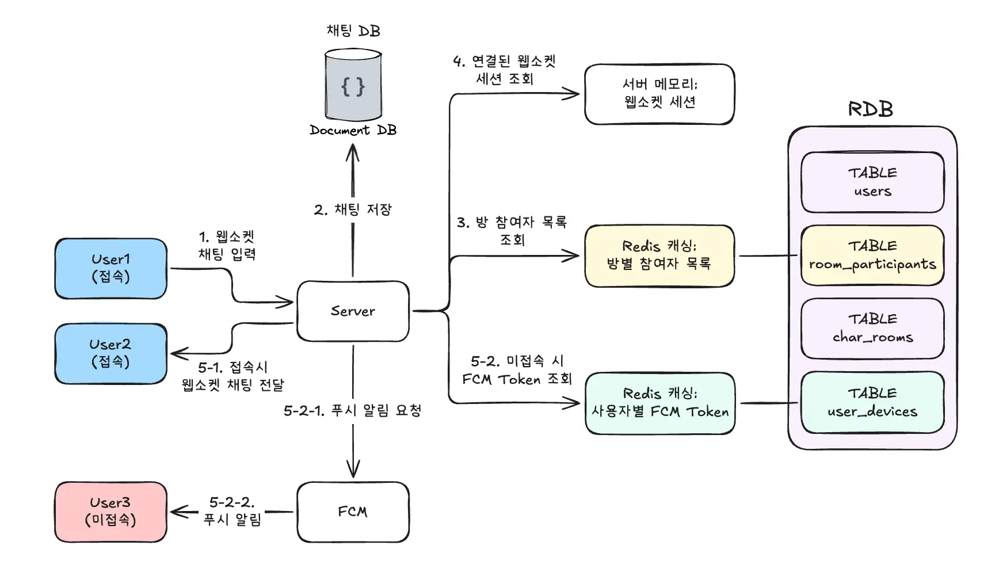
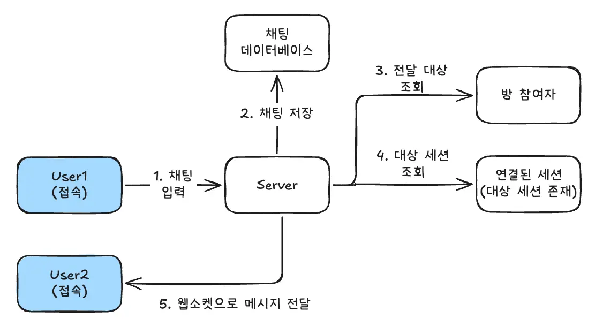
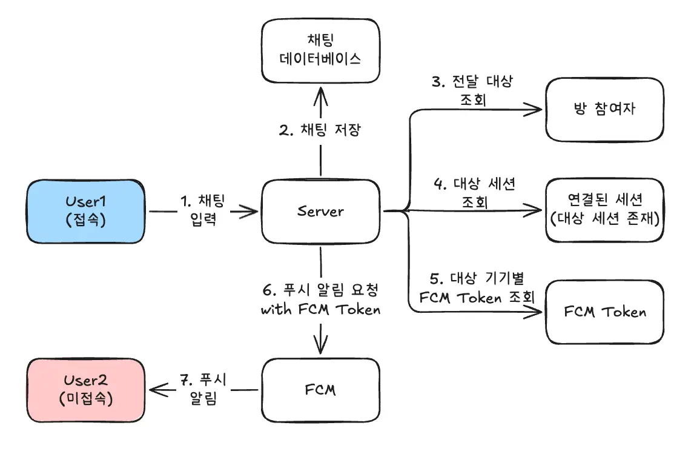
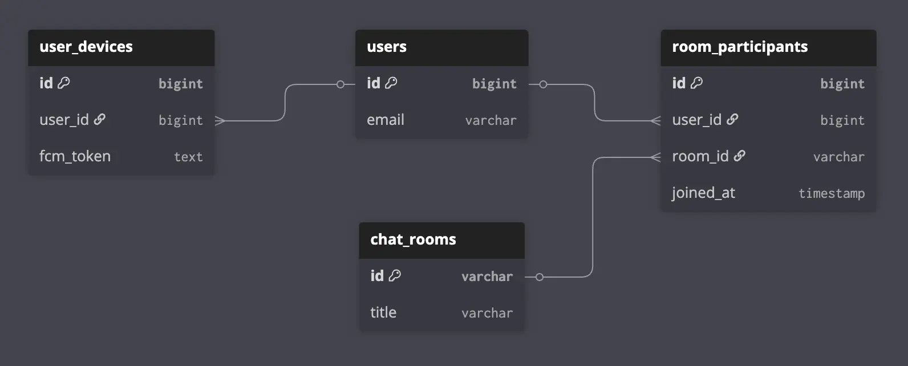

단일 서버 채팅 시스템 설계
- 카카오톡처럼 1:1 혹은 소규모 인원들이 포함된 소규모 채팅 시스템

핵심 기술: WebSocket
- 클라이언트와 서버를 최초 한 번 연결 후부터 양방향 통신이 가능해 여러 클라이언트의 채팅 메시지를 실시간으로 전달 가능
- 무거운 HTTP 헤더를 없앤 가벼운 프레임 통신
등의 이점으로 웹소켓을 사용한다. 웹소켓을 사용하지 않는다면 대표적인 대안으로 폴링(Poling)과 SSE(Server-Sent Events)이 있다.
- 폴링: 클라이언트가 주기적으로 서버에 새로운 메시지가 있는지 묻는 방식
- SSE: 서버 → 클라이언트로 한 방향으로 데이터를 전달해주는 방식
폴링에도 단순 폴링(Short Poling)과 롱 폴링(Long Poling)이 존재하는데 단순 폴링은 주기적으로 서버에 새 메시지가 있는지 요청하는 방식이고 롱 폴링은 일단 서버에 요청을 보낸 후 서버에 새로운 메시지가 들어올 때까지 연결을 기다리는 방식이다.
폴링의 구현 자체는 가장 단순하고 쉽지만 클라이언트가 많아질 수록 서버의 부하가 심해진다는 단점이 존재한다.
SSE는 서버 → 클라이언트로 새로 입력된 메시지를 전달하는 방식이다. SSE를 사용한다면 단방향 통신이기 때문에 메시지 입력은 HTTP 요청으로 처리해야 한다. 또한, 구형 브라우저나 특정 환경(HTTP/1.1)에서는 브라우저당 연결 개수 제한이 있을 수 있다.
웹소켓은 클라이언트와 서버를 연결해 양방향 통신을 가능하게 한다. 하지만 통신을 위해 계속해서 웹소켓 연결을 유지해야 하며 이는 서버의 메모리에 따라 동시 접속자 수가 제한될 수 있다. 또한, 서버가 세션 상태를 가지고 있어 서버가 꺼지면 연결된 모든 세션이 끊기게 된다.
후에 서버를 스케일 아웃으로 확장할 때 연결을 유지해야 한다는 특성 때문에 로드 밸런싱이나 인프라의 복잡도가 높아지게 된다.
그럼에도 효율성이 뛰어나기 때문에 웹소켓을 사용한다. 첫번째 이유는 무거운 HTTP 헤더를 포함하지 않는 것이다.
HTTP는 stateless 특성으로 요청시 매번 클라이언트에 대한 정보를 포함해야하고 이런 정보들이 HTTP 헤더에 포함된다. 반면 웹소켓은 연결이 끊기지 않는 stateful 특성을 가지고 있어 클라이언트와 서버가 서로 누군지 인지하고 있는 상태이기 때문에 필요한 데이터 본체(Payload)만 주고받으면 된다. 이러한 특성은 실시간 채팅 시스템에서 대부분을 차지하는 'ㅇㅇ'과 같은 짧은 메시지에 효율적이다.
웹소켓은 웹소켓 프레임(Websocket Frame)으로 통신한다.
HTTP 헤더는 최소 수백 바이트에서 수 킬로바이트 사용하지만 웹소켓 프레임은 2~14바이트 정도만 사용해 통신한다.
두번째 이유는 사용자의 상태를 알 수 있다는 것이다. 사용자가 앱을 종료하거나 네트워크가 끊기면, 서버는 이를 감지해 대응할 수 있다.
예를들어, 웹소켓이 연결된 상태에서는 채팅창에 바로 메시지를 표시해주지만 연결이 끊겨있다면 알림 형식으로 메시지를 전달하는 등의 상황에 대응할 수 있고, 연결이 끊긴 클라이언트의 세션 정보를 메모리에서 정리할 수 있다.
서버가 클라이언트의 끊김을 감지하는 표준적인 방법은 Ping-Pong 매커니즘을 이용한 하트비트 방식
- 서버가 주기적으로 클라이언트에게 'Ping' 프레임 전송
- 클라이언트는 Ping을 받으면 즉시 'Pong' 프레임으로 응답
- 서버가 'Ping'을 보낸 후 일정 시간 동안 응답이 오지 않으면 연결이 끊겼다 판단하고 소켓을 닫음
세션 관리
- 일반적인 채팅 서비스와 마찬가지로 채팅방 개념이 존재
- PC/모바일 등 멀티 디바이스 접속 가능
크게 2가지의 매핑 구조가 필요하다.
- 세션 저장소
- Key: UserID
- Value: WebSocketSession 객체 리스트
세션 저장소는 현재 서버와 클라이언트가 연결되어 있는 상태를 관리한다. 서버와 클라이언트 사이의 웹소켓이 종료되면 해당 UserID에 WebSocketSession을 정리해주어야 한다.
세션 저장소의 value가 리스트인 이유는 멀티 디바이스 때문이다. 단순히 UserID-WebSocketSession으로 관리하게 된다면 PC에서 접속 중에 모바일로 접속하게 된다면 세션 객체가 PC → 모바일로 교체되어 PC에는 메시지가 전송되지 않게 된다.
세션 객체는 웹소켓 연결 그 자체로 직렬화가 되지 않아 외부 저장소에 저장할 수 없어 서버 내 메모리에서 관리한다.(세션 저장소 in 서버 내 메모리)
- 채팅방 저장소
- Key: RoomID
- Value: UserID 리스트
채팅방 저장소는 연결 상태와 관계없이 채팅방에 입장한 모든 사용자의 ID를 저장한다.
채팅방 저장소는 집계나 관리가 편하도록 RDB에 저장한다. 이를 NoSQL에 저장한다면 다양한 조건 검색에 대해 데이터를 가공하거나 애플리케이션 레벨에서 복잡한 로직이 필요할 수 있다.
다만, 매 채팅마다 RDB에서 채팅방에 참여한 사용자를 조회하기에는 성능이 떨어질 수 있어 레디스 Set 자료구조 혹은 서버 메모리 내에 채팅방 참여 정보를 캐싱한다.
접속자에게 채팅 메시지가 전달되는 과정은 다음과 같다:

미접속 사용자 채팅 전달
지금까지의 흐름으로는 서버 ↔ 클라이언트 웹소켓이 연결되지 않은 미접속 사용자에게는 채팅이 전달되지 않는다.
일반적으로 미접속 사용자에게 알림으로 채팅이 전달되므로 FCM(Firebase Cloud Messaging) 서비스를 사용한다. 알림을 전송하기 위해 사용자와 기기를 식별하기 위한 FCM Token을 사용한다.
따라서 미접속 사용자에게 채팅을 알림으로 전달하기 위해서는 UserID별로 FCM Token을 관리해야 한다.
FCM Token은 사용자별 특정 기기를 식별하는 고유한 주소이므로 멀티 디바이스를 사용하는 사용자는 여러 개이의 FCM Token을 갖을 수 있다.
- 알림용 토큰 저장소
- Key: UserID
- Value: FCM Token 리스트
알림용 토큰은 앱을 삭제하거나 로그아웃 전까지 등 지속적으로 저장되어 있어야하고 사용자와 연관있는 데이터로 기본적으로 RDB에 저장 후 조회가 많이 될 수 있는 데이터이기 때문에 성능을 고려해 레디스에 캐싱해 사용한다.
미접속자에게 채팅 알림 전송하는 과정은 다음과 같다:

채팅 데이터베이스: Document 기반 데이터베이스
채팅을 저장하는 데이터베이스는 Domcument 기반 NoSQL 데이터베이스를 사용한다. RDB를 사용하지 않는 이유는:
- 채팅은 쓰기가 많이 발생하는 데이터로 데이터가 많아질수록 인덱스가 커지고 ACID를 지키기 위한 잠금 때문에 쓰기 성능이 급격히 떨어진다.
- 채팅 메시지는 다른 데이터와 연관해 join할 가능성이 적다.
전체적으로 NoSQL 기반의 데이터베이스가 쓰기 속도가 빠르다. Document 데이터베이스는 스키마가 정해져있는 RDB와 달리 자유로워 이후 사진/동영상이나 답글, 이모지 반응 등 확장이 용이하다.
K-V 데이터베이스의 경우 Key를 roomId로 설정할 경우 해당 키에 메시지가 계속해서 추가되는 형식이다. 추가될 때 기존 데이터에 붙는게 아닌 전체 데이터를 새로 덮어쓰기 때문에 채팅 메시지가 많아질 수록 성능이 떨어진다.
List나 Sorted Set 자료구조를 사용해 끝에 하나만 추가하더라도 보통 데이터를 메모리에 저장하기 때문에 계속해서 메시지를 저장하기에는 비용 효율이 떨어지며 내용 검색이 불가능하다.
대표적인 Document 데이터베이스인 MongoDB는 복합 인덱스 기능이 있어 조회도 빠르다. 또한, 데이터를 여러 DB 서버로 분산해 저장할 수 있는 샤딩을 지원해 스케일 아웃 확장이 용이하다.
기본 데이터 스키마:
| 필드명 | 타입 | 필수 | 설명 |
|---|---|---|---|
| _id | ObjectId | Y | 메시지 고유 식별자 (Primary Key) |
| roomId | String | Y | 채팅방 식별자 (조회 및 샤딩 기준 키) |
| senderId | String | Y | 발신자 고유 ID |
| content | String | Y | 메시지 본문 (텍스트, 파일 경로 등) |
| createdAt | ISODate | Y | 메시지 생성 일시 (ISO 8601) |
여기에 roomId와 createdAt에 복합 인덱스를 설정({ "roomId": 1, "createdAt": -1 })하면 채팅방별로 최신 채팅 메시지를 빠르게 조회할 수 있다.
만약 AWS 서비스를 사용한다면 크게 Amazon DocumentDB와 DynamoDB를 선택할 수 있다.
DocumentDB는 MongoDB의 API를 그대로 사용하기 때문에 이미 MongoDB로 구현됐다면 코드를 거의 그대로 사용할 수 있다. DocumentDB는 프리비저닝 기반(직접 서버 사양 결정)의 서비스이다.
DynamoDB는 서버리스 서비스로 관리할게 거의 없으며 직접 인스턴스를 만들 필요 없이 읽기/쓰기 용량 설정 후 바로 테이블을 만들어 사용할 수 있다. K-V 방식에 가깝지만 Document 기능이 결합되어 있다.
PartitionKey와 Sort Key를 조합해 메시지 조회를 빠르게 처리할 수 있다. 다만 복잡한 검색에는 불리할 수 있다.
RDB 스키마
채팅 메시지를 제외한 사용자 정보, FCM Token(디바이스 식별), 채팅방 정보는 RDB로 저장한다.
최소한의 데이터만을 포함

사용자(users)
| 컬럼명 | 타입 | 제약 조건 | 설명 |
|---|---|---|---|
| id | BIGINT | PK, Auto Inc | 유저 고유 식별자 |
| VARCHAR(255) | UNIQUE, NOT NULL | 계정 이메일 (로그인 ID) |
FCM Token(user_devices)
- 유저의 기기별로 FCM 토큰을 저장
- 사용자-디바이스는 1:N
| 컬럼명 | 타입 | 제약 조건 | 설명 |
|---|---|---|---|
| id | BIGINT | PK, Auto Inc | 기기 정보 식별자 |
| user_id | BIGINT | FK (users.id) | 해당 기기의 소유 유저 |
| fcm_token | TEXT | UNIQUE, NOT NULL | FCM 발송용 고유 토큰 |
채팅방(chat_rooms)
- 채팅방 자체의 메타데이터 저장
| 컬럼명 | 타입 | 제약 조건 | 설명 |
|---|---|---|---|
| id | VARCHAR(36) | PK | 방 고유 ID (UUID 권장) |
| title | VARCHAR(100) | - | 채팅방 이름 (단톡방인 경우) |
방 참여자(room_participatns)
- 채팅방에 참여한 사용자 리스트
- 사용자-채팅방이 N:N 관계로 사용자-방 참여자: 1:N과 방 참여자-방: N:1로 정규화
| 컬럼명 | 타입 | 제약 조건 | 설명 |
|---|---|---|---|
| id | BIGINT | PK, Auto Inc | 참여 정보 식별자 |
| user_id | BIGINT | FK (users.id) | 참여 유저 ID |
| room_id | VARCHAR(36) | FK (chat_rooms.id) | 참여한 방 ID |
| joined_at | TIMESTAMP | DEFAULT NOW() | 방 입장 일시 |